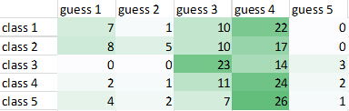
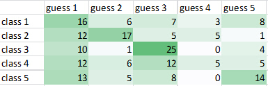
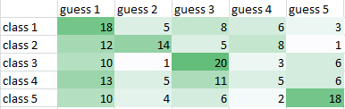
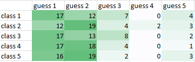

The goal of the project is to implement an image classification system. The main task is to train image classifiers on the training set, and do testing on new images.
The bag of features model is used widely in image classification.
Spatial Pyramid Matching
The spatial pyramid is an extension of the bag of features which locally orderless representing images at several leves of resolution.
Image Classification System
STEP 1: Feature extraction
In this project, dense sampling of SIFT descriptors is chosen as the feature extraction method.
STEP 2: Codebook Generation
K-means clustering is applied on the feature descriptors to learn the codebook.
STEP 3: Spatial pyramid matching
A spatial pyramid matching methods with three layer is used in this project.
STEP 4: Image representation
Two image representation methods are implymented in the frameworks: (1) descriptor quantization; (2) approximated LLC.
STEP 5: Classifier learning
Support Vector Machine with (1) linear kernel and (2) Radial kernel are implymented in the frameworks.
Experiment Results
-Single level v.s. Spatial pyramid matching
Fixed Parameter:
1024 codebook size + VQ + linear SVM


Single level: 30%
Spatial pyramid matching: 38.5%
From the result we can find that with the combination of different levels, the performance is rapidly improved. SPM is expecially useful on the topic of scene recogntion because the location information remain.
-Different codebook size
Fixed Parameter:
VQ + SPM + linear SVM

512: 37.5%
1024: 38.5%
From the result we can find that the size also have some influence on the performance. Smaller size is faster, but larger size can keep more kinds of feature clusters.
-Linear kernel v.s. Radial kernel
Fixed Parameter:
1024 codebook size + VQ + SPM
PS: The parameters of radial kernels are trained automatically and the one with best performance is gamma=0.0078125, C=512.
Linear kernel: 38.5%
Radial kernel: 34%
From the result we can find that although in training step, the radial kernel SVM might fit the data better, it might cause overfitting and might not have a better accuracy on evaluation step. Although VQ is nonlinear, linear SVM still get a better performance than radial kernel SVM.
-VQ v.s. LLC
Fixed Parameter:
1024 codebook size + SPM + linear SVM
PS: The parameters of radial kernels are trained automatically and the one with best performance is gamma=0.0078125, C=512.

VQ: 38.5%
LLC: 23.5%
It is unexpectedly that LLC is not better that VQ and has strong bias on class 1 and 2. Maybe there are some errors on LLC programing codes that I haven't found.
Final System
The final classifier is generated by dense SIFT, 1024 codebook size with k-means clustering, SPM, VQ with mean pooling, and linear SVM.
{kind=link}